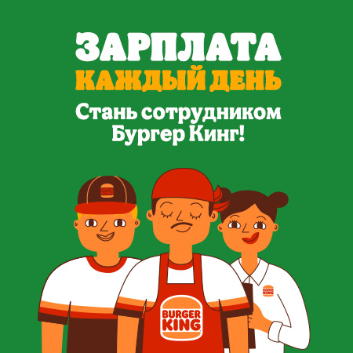

Вакансии
Курьер к партнеру сервиса Яндекс Еда
Условия
- Комфортное расписание
- Гарантии и бонусы
- Большое количество поступающих заказов (заказы поступают 24/7 круглосуточно)
- Доход до 3500 рублей в день

Работа в Т-Банк
Работа разных направлений:
- Домашний колл центр(ДКЦ). Работа из дома: взыскание задолженностей, привлечение новых клиентов и ведение уже существующих.
- Разъездная работа. Это представители компании по всей России: доставка карт, работа за стойками в крупных Торговых центрах.
- Работа в офисе. Это поддержка клиентов Банка из московского офиса Тинькофф.
Условия
- Доход без ограничений. Финансовая стабильность и возможность получать повышенное вознаграждение за дополнительные часы работы или активную продажу продуктов
- Удобный график работы. Работайте 5/2, 2/2 или по гибкому графику с почасовой оплатой — удаленно или в офисе. Если совмещаете с учебой, то подберем подходящую вакансию
- Можно без опыта. Главное — коммуникабельность, активность и желание работать, остальному научим. Начните свою карьеру в крупной и современной компании

Курьер к партнеру сервиса Burger King
Условия
- Еженедельные выплаты
- Бесплатное питание
- Удобная форма и термо-сумки для заказов
- Нет штрафов
- Компенсация транспорта не только авто-курьерам, но и вело, и мото
- Сменный график работы на выбор: 5/2, 6/1, 2/2 + ночное время до 3:00
- Возможность совмещать с другой работой или учебой

Специалист по доставке пластиковых карт
Обязанности
Доставлять клиентам банковские продукты
Подписывать документы с клиентами
Консультировать клиентов по выгодным предложениям и продуктам банка, помогать им подключить дополнительные услуги
Условия
- Достойная зарплата от 60000 руб., на размер которой вы сами сможете влиять
- Гибкий график: 5/2, 2/2, 4/2,3/2
- Оформление по ТК РФ
- Карьерный рост

Кассир ВкусВилл

Пеший исследователь в Яндекс Карты
Работа разных направлений:Что предстоит делать кандидатам (исследователям):
- ходить по городу и собирать данные об организациях: кафе, магазинах, ателье и других;
- проверять, чтобы сведения в Яндекс Картах были актуальными;
- добавлять организации, которые еще не отмечены на Картах;
- общаться с их представителями, если возникают вопросы;
- сдельная оплата зависит от количества выполненных задач, чем больше вы их делаете, тем выше вознаграждение;
- работа в интервале с 10:00 до 18:00 по будням от 25 часов в неделю.
Требования
- телефон на базе Android 7.0 и выше;
- ноутбук или компьютер с доступом в интернет;
- грамотно разговаривает и пишет по-русски;
- не стесняется говорить с людьми;
- хорошо ориентируется в городе;
- готов много ходить пешком.